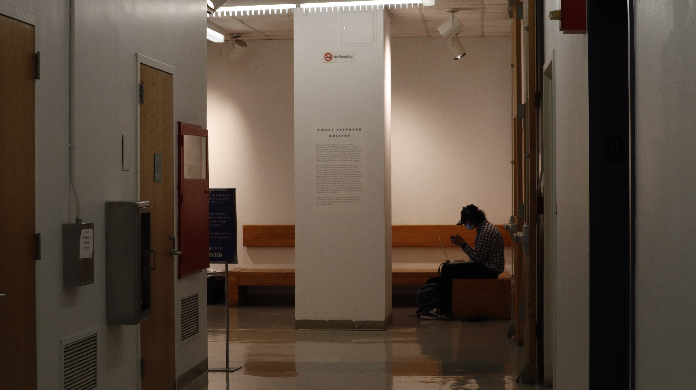
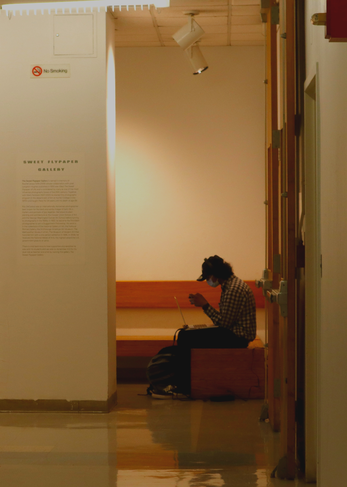

Both photos were taken on the 11th floor of the North building which I consider to be one of the “underrated” spots to be in at Hunter. I wanted to capture the two different vibes of the 11th floor. I captured the stool in between the walls of the lockers because of its mysterious vibe that it carried. I had never seen anyone use neither of those lockers and the lonely stool. The original picture had a lack of “lively” color, so with the following edits I decided to showcase what this small corner would look like if a literal “pop” of color were to be present. First, I cropped the image to 1920 x 1080px. Then, I brought the brightness up to 62 with a negative contrast of 36. This was to really enhance and brighten up the potential cool tones of this photo. Next, I used the “Curves” tool to finally add the “pop” of colors. I chose opposite points on the curve with the highest and lowest points above the line. And finally, I adjusted the hue to a -140 and kept the saturation to a 0.
 The second photo I took was of a person sitting on the bench of the north building’s 11th floor. Capturing this moment really resonated with my feelings toward this spot. The floor is quiet, but cozy enough to the point where one can enter into their own world and play their favorite game. Unlike the first photo, I chose to embrace this moment through its edits and how I would picture it as if it were a daydream. I decided to make the photo warmer with the following edits. First, I cropped the image to 5x7 inches. Next, I brought up the vibrancy to 46 and the saturation to 19. Then I used the color balance to adjust the midtones being, red: 36, green: 26, yellow: -13. Finally, I changed the levels of the photo to be 11, 1.0, 200. All together this made the photo a more warmer version of its original yellow/orange hue, which I feel really captured the “daydream”- like essence of the 11th floor.
Homework description here
HOME